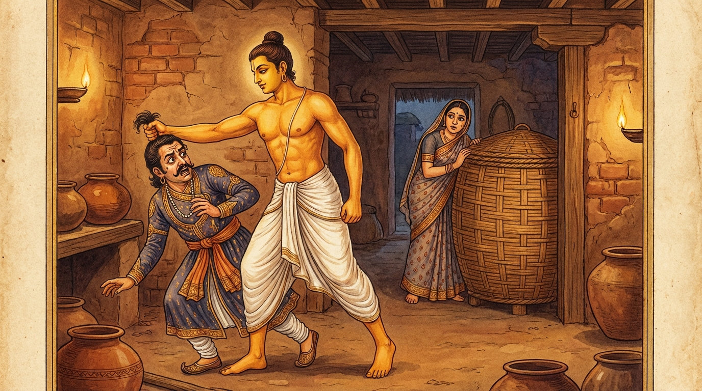

9. ගහපති ජාතකය (199)
“උභයං මෙ න ඛමතී” (මට මේ කරුණු දෙකම නොරුස්නේය) යන මේ ධර්ම දේශනාව බුදුරජාණන් වහන්සේ ජේතවනාරාමයේ වැඩවාසය කරන සමයෙහි, මහණදම පිළිබඳ කලකිරුණු එක් භික්ෂුවක් අරබයා වදාළ සේක. උන්වහන්සේ කරුණු ගෙනහැර දක්වමින්, “ස්ත්රීන් නම් ආරක්ෂා කළ නොහැකි ජාතියකි; පාප කර්මයක් කොට කවර හෝ උපායකින් ස්වාමියාව රවටන්නේමය”යි වදාරා අතීත කතාව ගෙනහැර දැක්වූ සේක.
අතීතයේ බරණැස් නුවර බ්රහ්මදත්ත රජු රාජ්යය කරන කල්හි, අප මහා බෝධිසත්වයන් වහන්සේ කාසි රටෙහි ගෘහපති කුලයක ඉපදී, වැඩිවියට පත්ව ගිහි ගෙයි වාසය කළහ. ඔහුගේ බිරිඳ දුස්සීලය; ගම් ප්රධානියා (ගම්මුලාදෑනියා) සමඟ අනාචාරයේ හැසිරෙන්නීය. බෝධිසත්වයන් වහන්සේ ඒ බව දැන, විමසිල්ලෙන් සිටියහ. එකල්හි වැසි සමයෙහි බීජ වැපිරූ පසුව ආහාර හිඟයක් (සාගතයක්) ඇති විය. ගොයම් පූදින කාලය උදා විය. සියලු ගම්වාසීහු එකතු වී, “මෙතැන් සිට මාස දෙකක් ගිය විට ගොයම් කපා පාගා වී දෙන්නෙමු”යි පොරොන්දු වී, ගම් ප්රධානියාගෙන් එක් මහලු ගොනෙකු ලබාගෙන මස් කර කෑහ.
ඉක්බිති එක් දිනක් ගම් ප්රධානියා අවස්ථාවක් බලා, බෝධිසත්වයන් වහන්සේ බැහැර ගිය වෙලාවක ගෙට පිවිසියේය. ඔවුන් දෙදෙනා සුවසේ වැතිර සිටින විටම බෝධිසත්වයන් වහන්සේ ගම් දොරටුවෙන් ඇතුළු වී නිවස දෙසට පැමිණියහ. ගම් දොරටුව දෙස බලා සිටි ඒ ස්ත්රිය ඔහු දැක, “මේ කවුරුන්දැ”යි එළිපත්ත මත සිට බලද්දී ඒ තමාගේ ස්වාමියාම බව දැන ගම් ප්රධානියාට කීවාය. ගම් ප්රධානියා බියෙන් වෙවුලා ගියේය. එවිට ඈ ඔහුට, “බිය නොවන්න, එක් උපායක් ඇත. අප විසින් ඔබෙන් ගව මස් කන ලදී. ඔබ මස් සඳහා මුදල් ඉල්ලන්නෙකු ලෙස හැසිරෙන්න. මම වී අටුවට නැග අටු දොර ළඟ සිට ‘වී නැතැ’යි කියන්නෙමි. ඔබ ගේ මැද සිට ‘අපගේ ගෙදර දරුවෝ බඩගින්නේ සිටිති, මට මස් මිල දෙන්නැ’යි පුන පුනා චෝදනා කරන්න” යැයි කියා, වී අටුවට නැග අටු දොර ළඟ හිඳ ගත්තාය. අනෙකා ගේ මැද සිට “මස් මිල දෙන්නැ”යි කියයි. ඈ අටු දොර ළඟ හිඳගෙන, “අටුවේ වී නැත, ගොයම් කපා පාගා ගත් විට දෙන්නෙමි, යන්නැ”යි කීවාය.
බෝධිසත්වයන් වහන්සේ ගෙට පිවිස ඔවුන්ගේ ක්රියාව දැක, “මේ පව්කාරිය විසින් යෙදූ උපායක් වනු ඇතැ”යි දැන ගම් ප්රධානියා අමතා, “එම්බා ගම් ප්රධානිය! අප ඔබේ මහලු ගොනාගේ මස් කෑවේ ‘මෙයින් මාස දෙකක් ගිය තැන වී දෙන්නෙමු’යි පොරොන්දු වී ය. ඔබ අඩ මසක්වත් ගත වීමට කලින් දැන්ම කුමක් නිසා (මිල) ඉල්ලා පැමිණියේද? ඔබ මේ කාරණය සඳහා පැමිණියා නොවේ, වෙනත් කරුණක් සඳහා පැමිණ ඇත්තෙහිය. මට ඔබේ ක්රියාව රුචි නැත. මේ අනාචාරයේ හැසිරෙන පව්කාරිය ද අටුවෙහි වී නැති බව දනී. ඈ දැන් අටුවට නැගී ‘වී නැතැ’යි කියන්නීය. ඔබත් ‘දෙන්නැ’යි කියන්නෙහිය. ඔබ දෙදෙනාගේම ක්රියාව මට රුචි නැතැ”යි ඒ අර්ථය පැහැදිලි කරමින් මෙම ගාථාවන් වදාළහ:
“(නුඹලා දෙදෙනාගේම) දෙබසම මට රිසි නොවෙයි; මට කැමති නැත. මේ තැනැත්තී (වී නැති බව දැන දැනම) අටුවට බැස ‘වී නොදකිමි’යි (වී නැතැයි) කියයි.”
“එම්බා ගම්පතිය! ඒ කරුණින් ඔබට මෙය කියමි. කටුක වූ, අල්ප ජීවිතයක් ගෙවන කල්හි, වී ලබා ගැනීමේ බලාපොරොත්තුවෙන් කෙට්ටු වූ මහලු ගොන් ධේනුවක් මස් පිණිස දුන්නේ, මාස දෙකකින් (වී) දිය යුතු බවට ගිවිසගෙනය. එහෙත් දැන් (ඒ) කාලය පැමිණීමට පෙර ඔබ එය ඉල්ලයි. එයද මට නොරුස්නේය.”
යනාදී වශයෙන් මේ ගාථාවන් වදාළහ.
එහි තං තං ගාමපති බ්රෑමි යනු, එම්බා ගම් ප්රධානිය! ඒ කාරණයෙන් ඔබට කියමි. කදරෙ අප්පස්මිං ජීවිතෙ යනු, අපගේ ජීවිතය නම් කරදර සහිතය; රළුය; ගොරෝසුය; දුක් සහිතය; අල්පය; මදය; ස්වල්පය. අපට එබඳු ජීවිතයක් පවතිද්දී ය. ද්වෙ මාසෙ සඞ්ගරං කත්වා, මංසං ජරග්ගවං කිසං යනු, මස් ගන්නා වූ අපට මහලු, කෙට්ටු, දුර්වල, ජරාවට පත් ගවයා දෙමින්, ඔබ ‘මාස දෙකකින් මුදල් දිය යුතුය’යි මෙසේ දෙමසකින් දෙන පොරොන්දුව (කාල පරිච්ඡේදය) කොට... අප්පත්තකාලෙ චොදෙසි යනු, ඒ කාලය නොපැමිණි කල්හි අතරතුරේදී චෝදනා කරන්නෙහිය (ඉල්ලන්නෙහිය). තම්පි මය්හං න රුච්චතී යනු, යම් මේ පව්කාර දුස්සීල ස්ත්රිය ඇතුල් අටුවෙහි වී නැති බව දැනගෙනම, නොදන්නියක මෙන් වී අටුවට බැස (කොට්ඨමොතිණ්ණා) අටු දොරටුවෙහි සිට ‘වී නොදකිමි’යි (න දස්සං) කියයිද, ඇයගේ එම ක්රියාවත්, ඔබ නොකල්හි යම් චෝදනාවක් කළෙහිද (තම්පි) එයත් යන මේ දෙකම මට රුචි නැත; මාගේ කැමැත්තක් නැත.
හෙතෙම මෙසේ කියමින්ම ගම් ප්රධානියාගේ කෙස් වැටියෙන් අල්ලා ඇදගෙන ගේ මැද හෙළා, “මම ගම් ප්රධානියා වෙමි”යි කියමින් අනුන් විසින් රැකබලා ගන්නා භාණ්ඩවලට (භාර්යාවන්ට) අපරාධ කරන්නෙහිදැයි ආදී වශයෙන් තර්ජනය කර, තලා පෙළා දුර්වල කොට, බෙල්ලෙන් අල්ලා ගෙයින් පිටතට ඇද දැමුවේය. ඒ දුෂ්ට ස්ත්රියද කෙස් වැටියෙන් අල්ලා වී අටුවෙන් බස්සවා, තලා පෙළා, “ඉදින් මෙවැන්නක් නැවත කරන්නෙහි නම් (මා තිට කරන දේ) දැන ගන්නෙහිය”යි තර්ජනය කළේය. එතැන් පටන් ගම් ප්රධානියා ඒ නිවස දෙස බලන්නටවත් එඩිතර නොවීය. ඒ පව්කාර ස්ත්රියද මනසින්වත් පරපුරුෂ සේවනයක් කිරීමට නොහැකි වූවාය.

බුදුරජාණන් වහන්සේ මේ ධර්ම දේශනාව ගෙනහැර දක්වා, චතුරාර්ය සත්යය ප්රකාශ කොට ජාතක කතාව නිමවා වදාළ සේක. සත්ය දේශනාව කෙළවර (කලකිරී සිටි) භික්ෂුව සෝවාන් ඵලයෙහි පිහිටියේය. “එකල ගම් ප්රධානියා වූයේ දේවදත්තය; ඔහුට නිග්රහ කළ ගෘහපතියා වූයේ මම ම වෙමි”යි වදාළ සේක.
ගහපති ජාතක වර්ණනාව නවවැන්නයි.